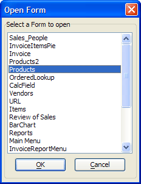

Selecting and Opening a Form
This example provides a script that you can place under the OnPush event of a button on a form. It displays a list of other forms in your database. After you select another form and click OK, the script closes the current form and opens the selected form.

|
dim SHARED a_forms[100] as C dim SHARED varC_result as C dim form_list as C dim ok_button_label as C dim cancel_button_label as C form_list = a5.Form_Enum(2) a_forms.initialize(form_list) ok_button_label = "&OK" cancel_button_label = "&Cancel" varC_result = ui_dlg_box("Open Form",<<%dlg% {frame=1,2:Select a Form to open} {sp=.5} {lf=1} {region} [.40,15formlist^#a_forms!select_form]; {endregion}; {region} {lf}{justify=center} <*15=ok_button_label!OK> <15=cancel_button_label!CANCEL> {endregion}; %dlg%,<<%code% if a_dlg_button="select_form" then a_dlg_button="" end if %code%) if varc_result = "OK" .and. formlist <> "" then frmname = parentform.Name() eval(frmname+".close()") form.view(formlist) end if |
See Also